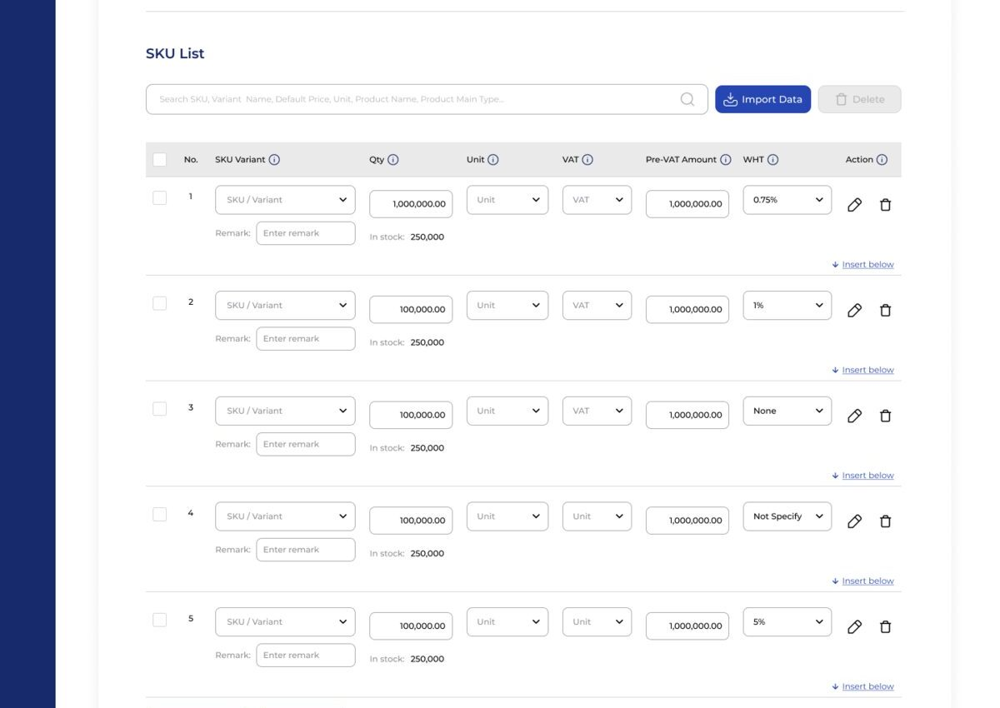

A brief from the Managing Director to simplify — visually and functionally — the core transaction flow used across BMS client deployments.
Brief
The MD's ask arrived at business-level: improve the visual design, tighten the UX, and shorten the flow. No formal spec, no user research attached — translating that into concrete design decisions was the actual work.
Approach
Audited the existing flow step by step to separate genuine business logic from steps that existed by habit. Rebuilt the visual hierarchy so the transaction's critical fields surface first, and reduced the number of screens a user has to move through to complete an entry.
Constraints
BMS is a TMES product, not a one-off build — this base design ships to every client, who then re-skin it to their own CI. Any change had to hold up as the foundation every deployment builds from, ruling out a full rebuild in favor of a targeted redesign.
Outcome
Across all three modules: the SKU list went from an empty placeholder to a searchable, paginated table; entries could finally be saved as drafts mid-flow; and financial fields were grouped so only what's relevant shows by default.